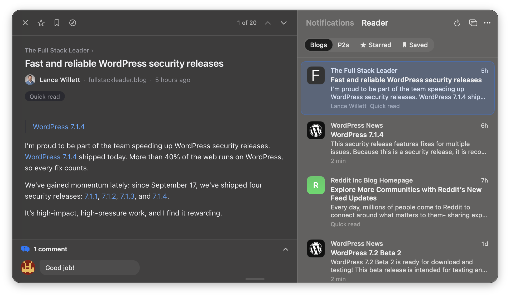
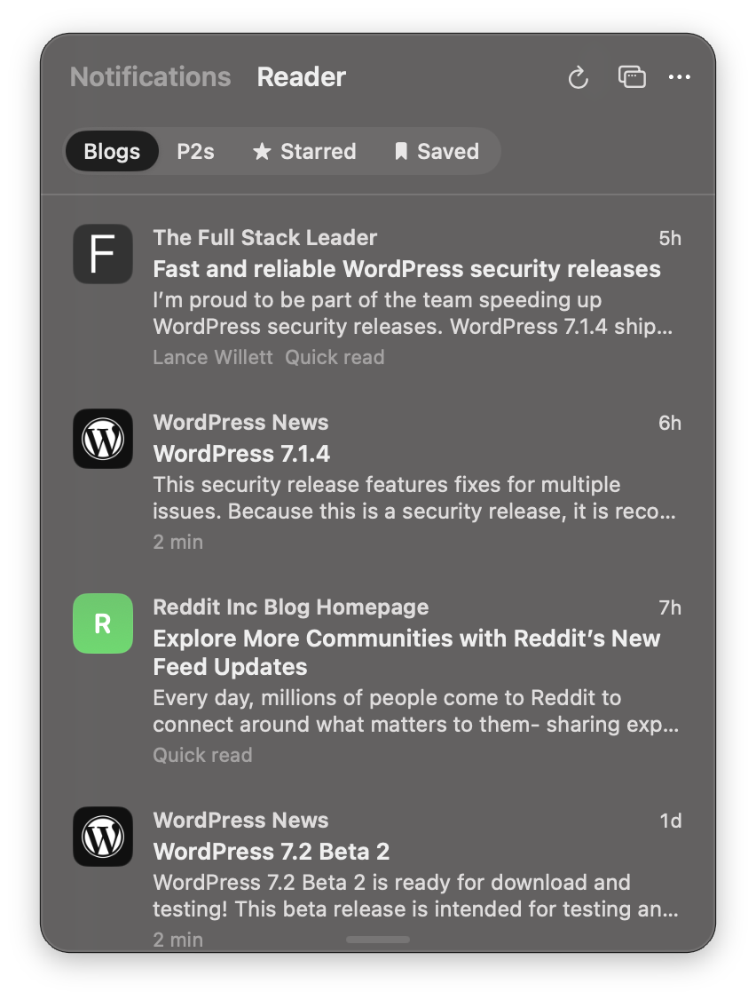

Dispatch for WordPress.com
Your notifications, blogs and P2s in the menu bar. Skim everything, read what matters, and skip opening a browser tab.

- Notifications and the Reader, togetherComments, likes and mentions alongside the blogs and P2s you follow.
- Made for skimmingReading time on every post. Your name is highlighted wherever someone mentions you.
- X-posts that make senseSee where an x-post came from and jump straight to the original.
- Star and saveStar the sites you care about most, and save posts for later.
- Stays out of the wayLives in the menu bar. Drag it out into a window when you want more room.

Installing
- Unzip the download and drag Dispatch into Applications.
- The first time you open it, macOS may say it can't verify the app. Go to System Settings → Privacy & Security and click Open Anyway.
- Click the W in your menu bar and connect your WordPress.com account.
Dispatch checks for updates once a day. You can also choose Check for Updates… from its ⋯ menu.